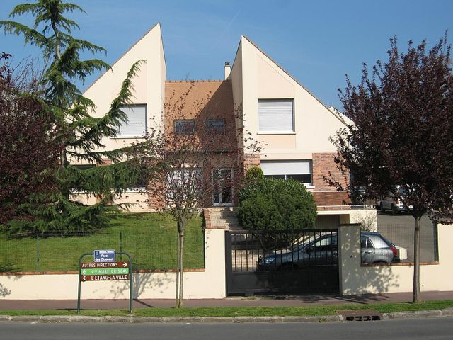

Constructeur de maisons
PROCEPT
Constructeur de maisons à Saint-Germain-en-Laye
Nos expertises
Des solutions complètes pour votre habitat
Notre méthode
De l'étude à la livraison

À propos
Votre projet, notre expertise
Où intervenons-nous ?
30+
Années d'expérience
RE2020
Certification
100%
Clé en main
Portfolio
Nos réalisations
Vie du chantier
Dernières nouvelles
Livraisons, chantiers en cours et programmes dans l’ouest parisien.
Ouest parisien
Zones d'intervention
Questions fréquentes